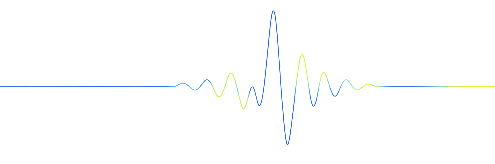

从这里开始
写作是整理思考最诚实的方式。这个博客会慢慢长成一份公开的学习档案。
我会在这里分享技术实践、项目中的取舍，以及偶尔闪过但不想遗忘的念头。文章不一定频繁，但希望每一次更新都有清晰的主题和真实的收获。
先把事情做出来，再把为什么写清楚。
如果你也在学习、创造，或者只是对某个问题保持好奇，欢迎通过 GitHub 与我交流。
持续记录，保持好奇。

每篇文章都有编号、状态与一条清楚的阅读路径。
ZSZ / PROFILE
写作是整理思考最诚实的方式。这个博客会慢慢长成一份公开的学习档案。
我会在这里分享技术实践、项目中的取舍，以及偶尔闪过但不想遗忘的念头。文章不一定频繁，但希望每一次更新都有清晰的主题和真实的收获。
先把事情做出来，再把为什么写清楚。
如果你也在学习、创造，或者只是对某个问题保持好奇，欢迎通过 GitHub 与我交流。